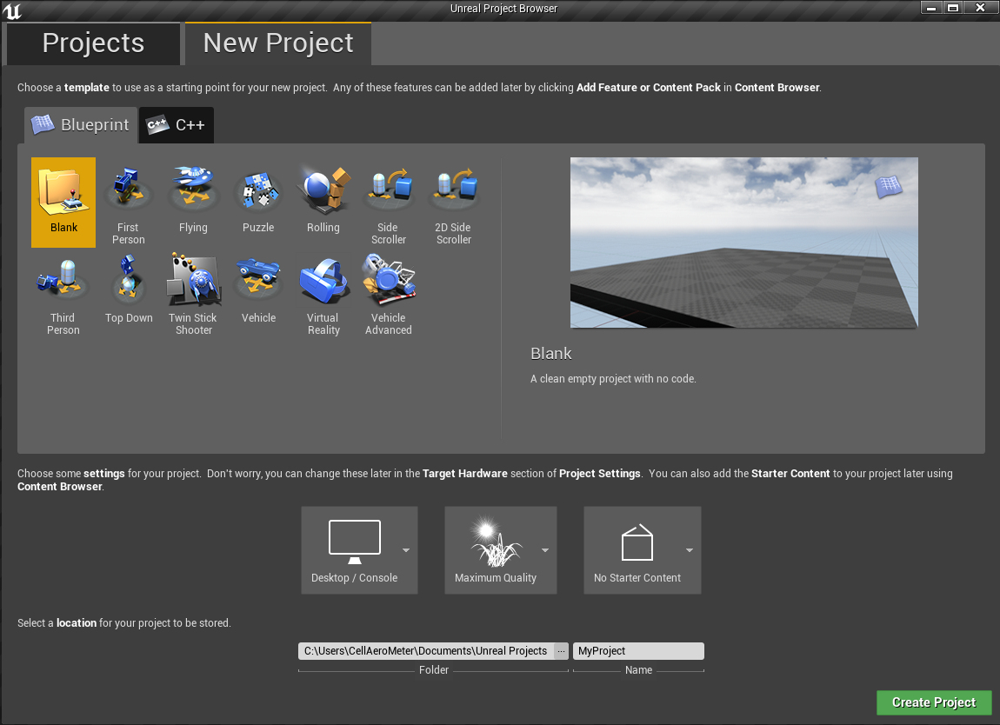
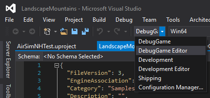

在 Windows 上使用 FST 无人驾驶环境构建 AirSim#
安装虚幻引擎#
- 下载 Epic Games 启动器。虽然虚幻引擎是开源的，可以免费下载，但仍然需要注册。
- 运行 Epic Games 启动器，从左侧打开“库”选项卡，点击“添加版本”，此时会显示下载虚幻 4.18 的选项，如下所示。如果您安装了多个版本的虚幻引擎，请点击相应版本“启动”按钮旁边的向下箭头，确保 4.18 为“当前版本”。
注意
本项目仅适用于 UE 4.18。如果您拥有 UE 4.16 或更早版本的项目，请参阅 升级指南 来升级您的项目。
构建 AirSim#
- 您将需要 Visual Studio 2017（确保安装 VC++ 和 Windows SDK 8.x）。
- 启动 VS 2017 的
x64 Native Tools Command Prompt。为仓库创建一个文件夹并运行git clone https://github.com/Microsoft/AirSim.git。 - 从命令行运行
build.cmd。这将在Unreal\Plugins文件夹中创建可立即使用的插件，可将其放入任何 Unreal 项目中。
创建和设置虚幻环境#
最后，您需要一个虚幻项目来托管您的车辆环境。请按照以下列表创建一个模拟 FSD 比赛的环境。
- 确保已构建 AirSim 并已安装 Unreal 4.18，如上所述。
- 打开 UE 编辑器，选择“新建项目(New Project)”。选择“空白(Blank)”，不包含任何启动内容。选择项目位置，输入项目名称（例如
ProjectName），然后点击“创建项目”。

-
将项目加载到编辑器后，从
文件菜单(File menu)中选择新建 C++ 类(New C++ class)，类类型保留默认的无(None)，点击下一步(Next)，保留默认名称MyClass，然后点击创建类(Create Class)。我们需要这样做是因为虚幻引擎要求项目中至少有一个源文件。它会触发编译并打开 Visual Studio 解决方案ProjectName.sln。 -
关闭并保存
ProjectName.sln。同时，关闭UE编辑器。 -
前往你的 AirSim 仓库文件夹，将
Unreal\Plugins文件夹复制到ProjectName文件夹中。这样，你的 Unreal 项目就拥有了 AirSim 插件。 -
从此处下载 FSD 赛马场的环境资源。将 zip 文件解压到
ProjectName\Content目录下（请参阅本文档末尾的文件夹树）。 -
从此处下载公式 Technion 赛车素材。将 zip 文件解压到
ProjectName\Plugins\AirSim\Content\VehicleAdv\SUV目录下，并在提示SuvCarPawn.uasset时选择replace（原始文件将保存到备份文件夹中）。 -
编辑
ProjectName.uproject，使其如下所示： 请注意，我们将项目命名为ProjectName，以便您需要更改它。
{
"FileVersion": 3,
"EngineAssociation": "4.18",
"Category": "Samples",
"Description": "",
"Modules": [
{
"Name": "ProjectName",
"Type": "Runtime",
"LoadingPhase": "Default",
"AdditionalDependencies": [
"AirSim"
]
}
],
"TargetPlatforms": [
"MacNoEditor",
"WindowsNoEditor"
],
"Plugins": [
{
"Name": "AirSim",
"Enabled": true
}
]
}
- 在 Windows 资源管理器中右键单击
ProjectName.uproject，然后选择Generate Visual Studio Project Files。此步骤将检测虚幻项目中的所有插件和源文件，并为 Visual Studio 生成 .sln 文件。

提示
如果缺少Generate Visual Studio Project Files选项，您可能需要重启计算机才能使 Unreal Shell 扩展生效。如果仍然缺少该选项，请在 Unreal 编辑器中打开ProjectName.uproject，然后从文件(File)菜单中选择Refresh Visual Studio Project。
- 在 Visual Studio 中重新打开
ProjectName.sln，并确保“DebugGame Editor”和“Win64”构建配置是活动构建配置。

-
按
F5键进行debug(调试)。这将启动虚幻编辑器。虚幻编辑器允许您编辑环境、资源和其他游戏相关设置。 -
首先，加载一张地图来设置你的环境。地图位于
Content\RaceCourse\Maps目录下。双击选择其中一张地图。 -
在如下所示的
Window/World Settings中，将GameMode Override设置为AirSimGameMode：

- 接下来，如果您想更改
PlayerStart对象在环境中的位置（该PlayerStart对象已存在），您可以在World Outliner中找到并修改它。AirSim 插件将在此处创建并放置载具。如果位置过高，载具会在您按下“播放”按钮时立即掉落，从而可能造成随机行为。

-
在虚幻编辑器中，前往“编辑->编辑器偏好设置”，在“搜索”框中输入“CPU”，并确保“在后台运行时使用较少 CPU (Use Less CPU when in Background) ”未勾选。如果不勾选，当虚幻引擎窗口失去焦点时，虚幻引擎的速度将显著下降。
-
请务必
保存(Save)这些编辑。点击虚幻编辑器中的“播放”按钮。请参阅如何使用 AirSim。
预备……开始……开始！！！ 您现在正在 FSD Unreal 环境中运行 AirSim。
设置方向盘（罗技 G920）#
如果您想手动驾驶，则需要方向盘。有关更多详细信息，请参阅 方向盘说明 。